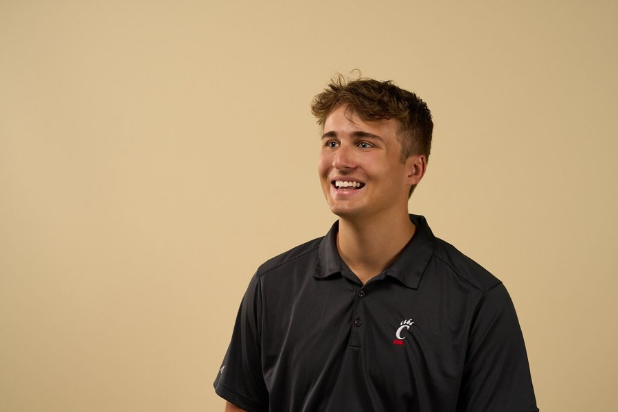

Nolan R. Wolf
Finance & Information Systems, University of Cincinnati. Experience across enterprise sourcing, product management, startup leadership, and consulting, taken on alongside a full course load.
Real-world experience, by design.
Every role has been a different kind of work: running packaging RFPs, auditing distributor markups, running Design to Value benchmarking, building an AI-enabled workflow system for product teams, mapping data across an ERP migration, and now leading campus growth campaigns for a startup. Each move was intentional — taking on a new kind of work to gain as much exposure as possible before graduation.
Carl H. Lindner College of Business
Bachelor of Business Administration · Finance & Information Systems, expected May 2027. GPA 3.881, Dean's List every semester enrolled.
Coursework
Investments, Corporate Finance, Business Intelligence, Database Design, Financial Information & Valuation, App Development
Awards
Cincinnatus Scholar · Carl H. Lindner Trailblazer Scholar · SAB Emerging Leader of the Year
Where else to look
A real-money equity portfolio run since 2023 with a formal investment thesis, a full equity research write-up on Kraft Heinz, and leadership roles across two campus organizations.